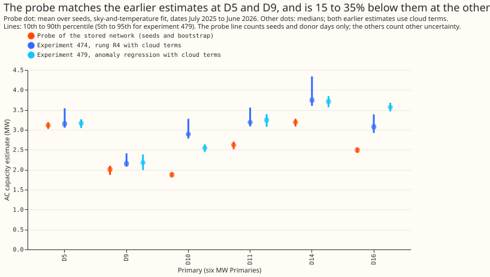
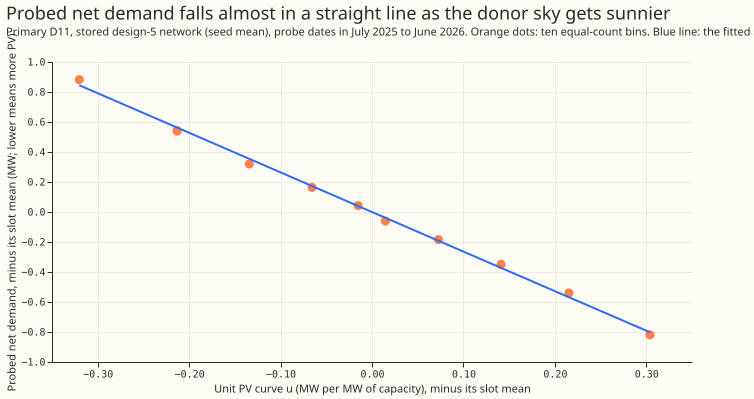
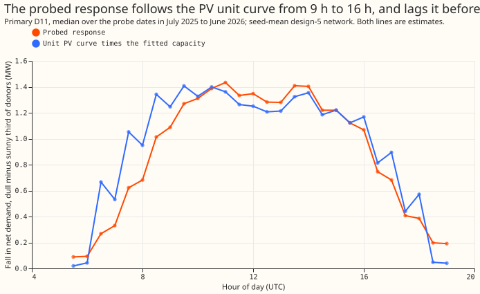
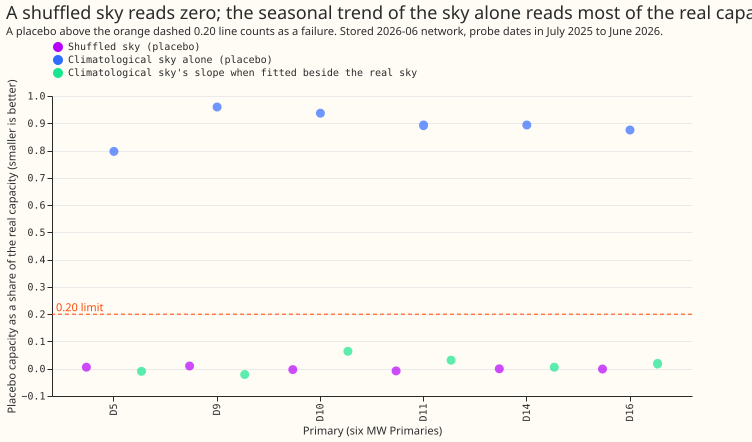
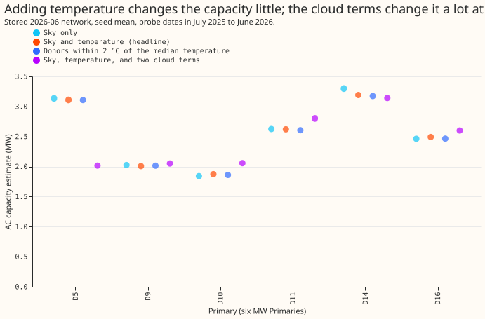
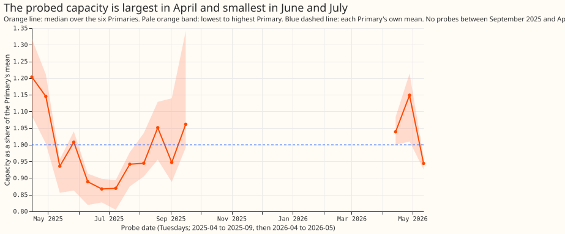
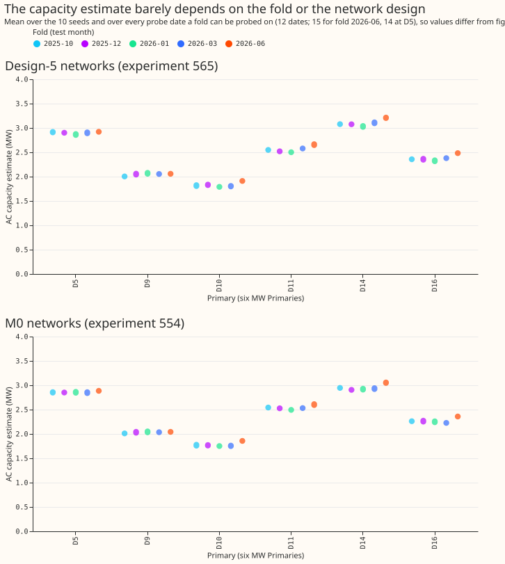

Probing a lag-free neural network for unmetered PV capacity, on stored weights
Take-home message: the stored neural networks respond to the sky as solar output would, and the response is steady, but this probe cannot show that the response is solar capacity. Each stored neural network was given a fixed calendar and the weather of other days. The probe read how much the network's net-demand forecast falls as the donor sky clears. At the six MW Primaries (D5, D9, D10, D11, D14, and D16, the Primary substations whose power is metered in megawatts) the response equals 1.87 to 3.19 MW of alternating-current (AC) photovoltaic (PV) capacity. The probed capacity is 0.65 to 0.99 of the estimate of experiment 474 and 0.70 to 0.98 of the estimate of experiment 479. The verdict is partly supported. Four of the 6 predictions hold, one holds at 5 of the 6 Primaries, and the placebo prediction fails for one of its two placebos.
What was done
- Weights. The probe reads the stored weights of 50 design-5 neural networks from experiment 565 (5 folds, 10 seeds) and 50 M0 neural networks from experiment 554. Both were pretrained on ERA5 (the ECMWF Reanalysis v5) and CAMS (the Copernicus Atmosphere Monitoring Service) estimates of past weather, and neither takes recent power as input. A fold is named by its test month, and the fold's weights were trained on data that ends before that month. The probe fits nothing and runs on a CPU.
- Probe. The probe dates are 12 Tuesdays from 2025-04-15 to 2025-09-16 and 3 Tuesdays in April and May 2026. For each date and each daylight half-hour, the datetime inputs and the drift position are fixed. The weather inputs come from donors. A donor is the same half-hour of a day within 21 days of the probe date's day of the year, in the fold's pretraining years, at the Primary's own location. The donor's shortwave radiation is rescaled to the probe date's sun.
- Regression. The probed net demand (MW) is regressed on the donor's temperature and on the pooled unit PV curve of experiment 269, with one intercept per half-hour slot. The unit curve is the PV output per MW of AC capacity as a function of irradiance and sun elevation, read at the donor sky. The capacity is minus the slope on the unit curve.
- Intervals. The spread over the 10 seeds, and a day-block bootstrap of 200 resamples of whole donor days.
- Placebos. A placebo repeats the regression with a sky that carries no day-to-day signal. The shuffled-sky placebo permutes the donor skies within a slot. The climatological-sky placebo replaces each donor's sky by the mean sky of its 7-day bin of offsets from the probe date.
Figures

Figure 1. The probe matches the earlier estimates at D5 and D9, and is 15 to 35% below them at the other four Primaries. The probe's own interval is narrow because it counts seeds and donor days only. The interval does not count the shortfall of recovery that experiment 479 measured on injected farms.

Figure 2. The probed net demand falls almost in a straight line as the donor sky gets sunnier. Binning by equal counts shows no reversal at any of the six Primaries (see the monotonicity bullet below).

Figure 3. The probed response follows the unit curve from 9 h to 16 h, and lags it before 9 h. The median correlation over probe dates is 0.89 to 0.92.

Figure 4. A shuffled sky reads zero, and the seasonal trend of the sky alone does not. Fitting the climatological sky beside the real sky leaves the climatological sky's slope at -0.02 to 0.06 of the real capacity. The real response therefore carries the trend, and the climatological placebo is not a null here.

Figure 5. Temperature-matched donors change the capacity by 1% or less, and the two cloud terms change it by up to 35%. The cloud terms are close to collinear with the unit curve (within-slot correlation about -0.9), so the regression with cloud terms is not identified.

Figure 6. The capacity depends on the probe date. It is about 13% above the Primary's mean in April and about 12% below it in June and July. A fixed unit curve does not capture the network's seasonal response. The date-to-date spread (0.2 to 0.4 MW) is therefore larger than the seed spread.

Figure 7. The capacity differs by up to 0.18 MW between folds, and by up to 6% between the design-5 and M0 neural networks. Fold 2026-06 averages 15 probe dates and the other folds 12, and the 3 extra spring dates read high (figure 6). On the 12 common 2025 dates the fold range is at most 0.15 MW.
Predictions
- Seed standard deviation under 0.3 MW at 4 of the 6 Primaries: holds at 6 of 6 (0.04 to 0.09 MW on the headline dates, and at most 0.12 MW in any fold or arm). The bootstrap standard deviation is 0.01 to 0.02 MW on the headline dates.
- Monotone fall in the unit curve at all 6 Primaries: holds (Spearman correlation -1.0 and no rise between bins at 6 of 6, for both designs).
- Hour-profile correlation of 0.9 or more: holds at 5 of 6 Primaries. Primary D5 is 0.89 and the other five Primaries are 0.90 to 0.92. D5 has 14 probe dates.
- Within 0.6 to 1.4 of experiment 479 at 4 of 6 Primaries: holds at 6 of 6 (0.70 to 0.98). Against experiment 474 the ratio is 0.65 to 0.99.
- Placebos under 0.20 of the real capacity: the shuffled-sky placebo holds (-0.01 to 0.01). The climatological-sky placebo fails (0.80 to 0.96) for the reason given under figure 4.
- Temperature-matched donors move the capacity by less than its interval: holds (0.99 to 1.00 of the headline capacity).
- Stop rules: neither fires. The seed standard deviation never exceeds 0.5 MW, and the response is monotone at all 6 Primaries.
Reproduction, coverage, and review notes
- All 50 design-5 neural networks reproduce their logged validation loss to within 0.00005.
The check uses the same validation rows and seeds as the training did. The 50 M0 neural
networks load strictly and give finite losses (0.46 to 0.52). Experiment 554 logged none to
compare. The script is
e00616_reproduce.py. The stored forecasts of the two experiments come from fine-tuned networks, which the probe does not use. - Headline set. The headline uses the design-5 networks of fold 2026-06 and the 9 probe dates from July 2025 to June 2026 (8 at D5). Figures 1, 4, and 5 use the same set. The values are AC MW, as the mean with the 10th to 90th percentile over seeds and bootstrap: D5 3.11 (3.02 to 3.19), D9 2.01 (1.87 to 2.10), D10 1.87 (1.83 to 1.92), D11 2.62 (2.51 to 2.70), D14 3.19 (3.08 to 3.28), and D16 2.49 (2.43 to 2.55). The median of experiment 474's rung R4 is 3.15, 2.15, 2.89, 3.19, 3.74, and 3.08. Experiment 479's median is 3.17, 2.18, 2.55, 3.25, 3.71, and 3.57.
- Spread over probe dates. The standard deviation over the 15 probe dates is 0.22 to 0.42 MW. The interval above leaves this spread out, and it is the larger uncertainty.
- Designs and folds. The M0 neural networks give 0.94 to 1.00 of the design-5 capacity. The other folds give 0.92 to 1.01 of the 2026-06 fold's capacity.
- Coverage. Primary D5 has no probe row on 2026-05-12, so it has 14 probe dates. Primary D9 has about 2 years of donors against about 6 at the other Primaries, because its power history is shorter.
- This experiment does not test recovery of an injected farm or of a load that follows the clouds. A probed capacity below experiment 474's at D10 and D16 could mean the probe falls short, or that experiment 474 overestimates. An injection test would show which.
- No forecast was scored, so the forecast-score checks do not apply. The median-minus-mean, mean-forecast-error, and tail-calibration checks were skipped, and none of the audit triggers fired. The experiment found no new data-processing problem.
- No metered generator series is shown. The unit curve is a pooled shape of six metered farms, and it stays in the private data folder.
- The inputs respect the July 2026 holdout. The weather inputs are ERA5 and CAMS estimates of past weather, so the probe describes the weather-to-demand mapping and is not a forecast.
- Code.
ml-experiments/00616-lag-free-network-pv-capacity-probe-on-stored-weights/. The code imports from experiments 269, 397, 418, 428, 448, 510, 554, and 565. The results are in the private data folder of the same name. - A Sonnet code review before the final numbers gave seven findings. The review showed that the climatological placebo is not a null, so the joint fit was added. It also found a dead function, which was removed, and a wrong docstring, which was fixed. The unidentified cloud regression and the narrow bootstrap are reported as caveats. A Sonnet figure review found 10 problems, all fixed and re-checked. A Sonnet write-up review corrected the figure 1, 6, and 7 captions and the date-set statements, and a Sonnet prose review shaped the wording.
- Pre-registration. The pipeline was debugged on the 2026-06 fold with one run that averaged the seeds and fitted the temperature regression only. That run found a missing-row bug, and the thresholds above were not changed afterwards.
Recommendation on step 2
The decision rule of the plan is not met, because the climatological placebo failed, and the recommendation is still to run step 2, the injected known-answer test (2 to 4 GPU-hours). The rule asked for both placebos to pass. The climatological placebo fails for a reason that the joint fit explains after the fact (figure 4), so this departure rests on a post hoc analysis. The probe is stable, because the seed standard deviation of 0.04 to 0.09 MW makes a 2 MW injection more than 20 seed standard deviations. The probe also passes the shuffled-sky placebo and the temperature-matched check. The probe cannot show recovery. It sits 15 to 35% below experiments 474 and 479 at four Primaries (D10, D11, D14, and D16), and an injected farm and an injected cloud-following load would test whether the probe or the two earlier estimates are wrong. The design review recommends testing the 4 MW injection first. Leave the cloud terms out of the regression, and quote the probe interval together with the spread over probe dates.
Options for follow-up
- Step 2 of the design review, with the climatological placebo replaced by the joint fit of figure 4.
- Probe the fine-tuned networks of the same Primaries, to see whether fine-tuning on the ECMWF ensemble (ENS) forecasts moves the capacity.